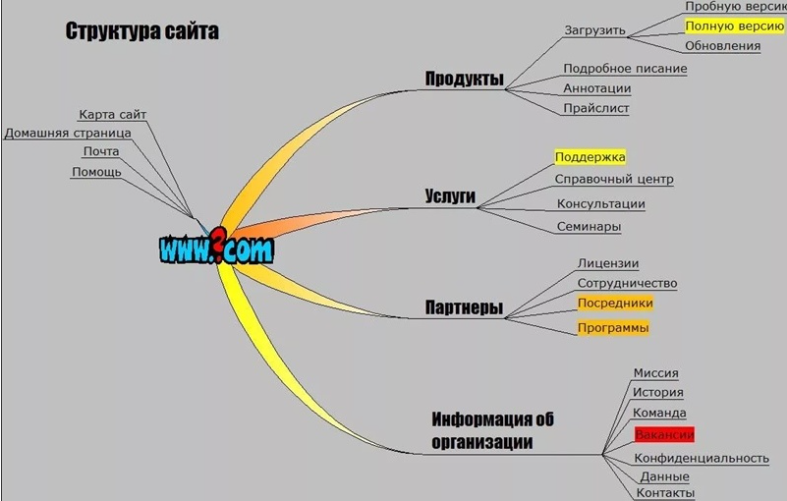
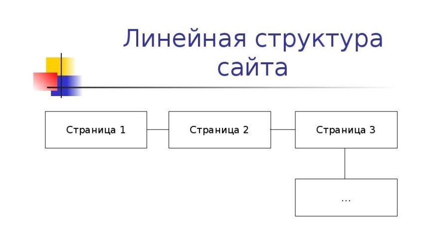
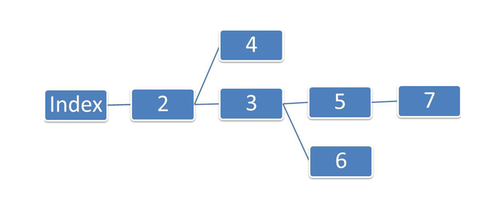
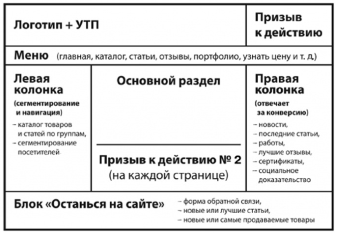
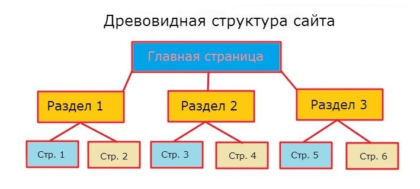

Структура сайта – это четкая схема, по которой будет разрабатываться ресурс. Наглядная структура покажет вид будущего сайта. Существуют классические составляющие структуры любого сайта, но есть и дополнительные фишки, которые преследуют свою цель. Например, в интернет-магазине обязательно должна быть страница для оплаты, а в лендинге – место под призыв к действию. Иначе для чего все затевается?
Любой ресурс создается согласно определенному плану. Именно он отображает структуру сайта. В плане обязательно указывается, как должны располагаться страницы ресурса относительно друг друга. Чаще всего это делается в виде графической схемы с отдельными блоками и связывающими их стрелками.
Структура может быть внешней и внутренней. Внешняя представляет собой макет страницы, на котором блоками обозначены отдельные ее элементы. Внутренняя структура включает в себя категории и разделы сайта и отношение к ним отдельных страниц. Ее сложнее всего организовать правильно.
Схема ресурса в первую очередь зависит от его специфики и направленности, того, какую бизнес-задачу он решает. Если речь идет об одностраничном сайте-визитке, то составить его план довольно просто: на одной странице будет размещаться вся основная информация. Другое дело – информационный портал или интернет-магазин.
Логика такой структуры – ознакомить пользователей сайта со всеми его страницами, расположенными в определенной последовательности. Линейная схема применяется в сайтах-презентациях и портфолио. Из главной страницы как бы вытекают все остальные и расставляются цепочкой, звенья которой взаимосвязаны. Подобная структура не удобна для продвижения. Это обусловлено тем, что рекламировать можно только главную страницу.
Пример – сайт-портфолио фотомодели, работающей в нескольких разных стилях. Благодаря ответвлениям на одном сайте можно показывать сразу несколько продуктов. Переходя на ветку, пользователь будет видеть постраничную презентацию товара. Линейная структура с ответвлениями подразумевает, что у сайта будет одна главная страница, но несколько последних. Для продвижения схема также не удобна.
Подразумевает, что есть несколько равнозначных страниц, на которые ссылаются все остальные. Блочная структура сайта подходит для презентации продукта: на страницах можно разместить описания отдельных свойств или характеристик товара. Все страницы будут перелинкованы и связаны с главной, благодаря чему сайт будет легче продвигать. Однако блочная верстка достаточно специфична и подходит не всем видам ресурсов.
Наиболее универсальный вариант. В нем каждому товару или услуге отводится отдельная ветка: раздел или подраздел. Привычнее всего пользователям общаться именно с такими ресурсами. При древовидной структуре смысловая нагрузка делится между главной страницей и отдельными разделами, так как с ними линкуются отдельные страницы. Для продвижения это наиболее оптимальный вариант, позволяющий рекламировать сразу несколько разделов сайта.
Предположим, вид структуры сайта выбран: линейная, линейная с ответвлениями, блочная или древовидная. Следующий шаг – определиться, как он будет реализован на практике, то есть запланировать страницы, разделы, подразделы и т. п. Визуальное представление (шрифт, цвет кнопок, расположение меню и пр.) пока не обсуждаются.
Структура во многом зависит от того, какие задачи должен решать ресурс. Выделяют четыре основных вида сайтов: визитка, коммерческий, информационный или блог, интернет-магазин. Остановимся на каждом подробнее.
Обладает самой простой структурой. Как правило, состоит всего из двух уровней: главной страницы и остальных
Такой ресурс должен решать более сложную бизнес-задачу, чем знакомство с компанией. Поэтому понадобится и более разветвлённая структура с дополнительными уровнями страниц. Например, основные страницы можно посвятить главным направлениям работы предприятия, а подразделы – более узким сферам деятельности. Такое решение оптимально для компаний, оказывающих услуги, или любых других коммерческих организаций. Однако функция интернет-торговли здесь не предусмотрена.
Здесь многоуровневость создается с помощью разделов, которые состоят из отдельных страниц. На эти страницы невозможно попасть из главного меню. Это основное отличие информационного сайта от коммерческого, на все подстраницы которого можно перейти из меню. Исключение – страницы со статьями. Иногда доступ к ним делают не только из меню, но даже с главной страницы.
С количеством разделов и подразделов нужно определиться до утверждения структуры сайта, то есть на этапе проработки. Если речь идет о личном блоге, нужно заранее продумать, каким темам будут посвящены публикуемые статьи и как читатели смогут найти их на сайте.
Если планируется зарабатывать на рекламе, то верстка ресурса должна основываться на семантическом ядре.
Пожалуй, самый сложный по своей структуре вид сайтов. Чтобы учесть все поисковые запросы пользователей, потребуется создать не только многоуровневую систему разделов и подразделов, но и внедрить фильтры. И здесь важно не ошибиться и правильно решить, какие свойства реализуемых товаров пойдут в фильтры. Например, если магазин занимается продажей мягкой мебели, логично разделить ассортимент по качеству обивки (ткань, натуральная кожа, экокожа и т. п.), а не по цвету.
Хотя можно установить несколько фильтров, и тогда пользователи смогут группировать товары сразу по двум-трем и более свойствам. Ведь если магазин специализируется на продаже именно разноцветной мебели, то логично сделать фильтр по цветам. Разветвленная система фильтрации необходима, когда у товаров есть несколько основных характеристик, по которым люди их ищут в поисковых системах. Например, это может быть сочетание цвета и конструкции (диван синий угловой) или размера, цвета и материала (кровать двуспальная белая из дерева).